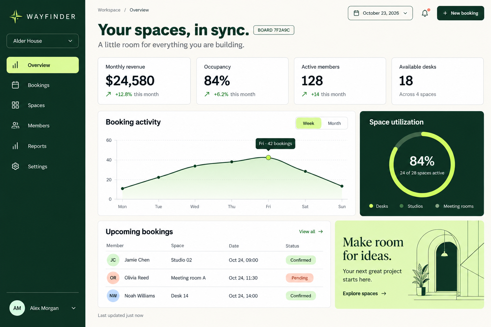
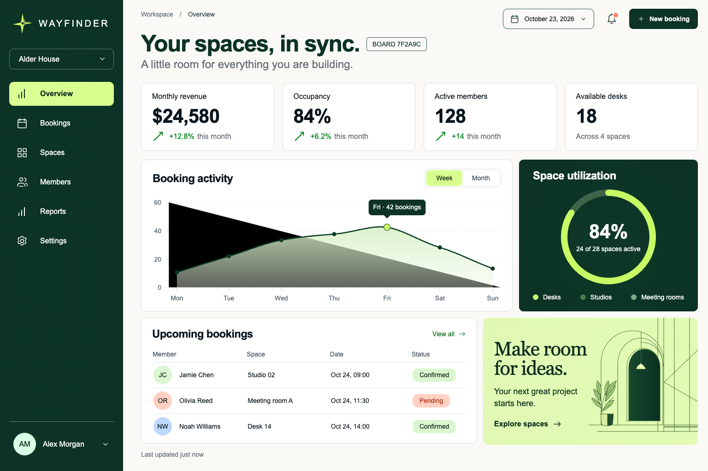
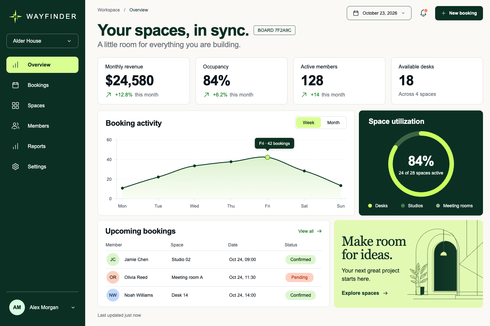
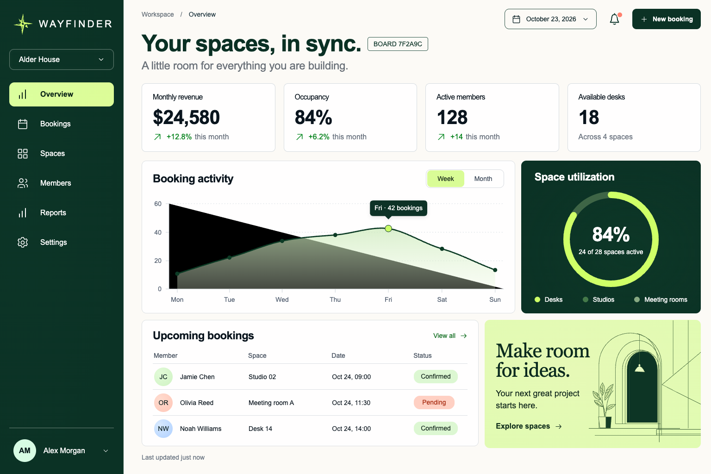

Visual reconstruction experiment · October 23, 2026
One screenshot. Four builds.
GPT-6.1 Sol and GPT-6 Astra, each tested through Smith and Codex CLI. Same screenshot, task, reasoning effort and ten-minute limit. Every implementation is preserved as produced.
Inspect the difference

Change opacity to inspect alignment, spacing, typography and chart geometry. Screenshots use the same 1536×1024 viewport.
Measured evidence
| Harness / model | Elapsed | Text anchors | Region IoU | SSIM | Cached input | Interactions | 375px |
|---|---|---|---|---|---|---|---|
| Smith / Sol | 363s | 64/64 | 0.990 | 0.857 | 21.3% | 5/5 | Fits |
| Codex CLI / Sol | 407s | 64/64 | 0.992 | 0.837 | 90.2% | 5/5 | Fits |
| Smith / Astra | 438s | 64/64 | 0.991 | 0.868 | 23.6% | 5/5 | Fits |
| Codex CLI / Astra | 252s | 64/64 | 0.991 | 0.829 | 86.1% | 5/5 | Overflow |
Higher region IoU and SSIM mean closer geometric and pixel agreement. Neither is an overall product-quality score. Cache percentages use provider-reported input totals; native prompts and tool sequences differ between harnesses.
Method and limitations
- One generated reference, one attempt per arm. The marker and metric values were not supplied as text.
- Text coverage checks visible DOM text against a manually transcribed set of anchors. Region IoU uses nine manually measured reference regions and the matching DOM containers.
- SSIM compares original-size RGB browser captures. Fonts, antialiasing and small shifts affect the number; the full images remain the primary visual evidence.
- Interaction checks cover opening the booking dialog, Escape dismissal, adding a booking row, chart-period selection and sidebar selection. Failures include the grader's error notes in evaluation.json.
- Runs used each harness's native tools and system instructions. Two balanced waves ran two arms concurrently. Elapsed time includes initialization and tool use and is not a controlled latency ranking.
- Desktop, tablet and mobile were rendered in real Chrome. These are unedited benchmark outputs, so detected defects are reported rather than repaired.
Exact task · Ground truth · Full browser evaluation · Run records


Codex CLI / Sol
Open implementation ↗


Smith / Astra
Open implementation ↗


Codex CLI / Astra
Open implementation ↗